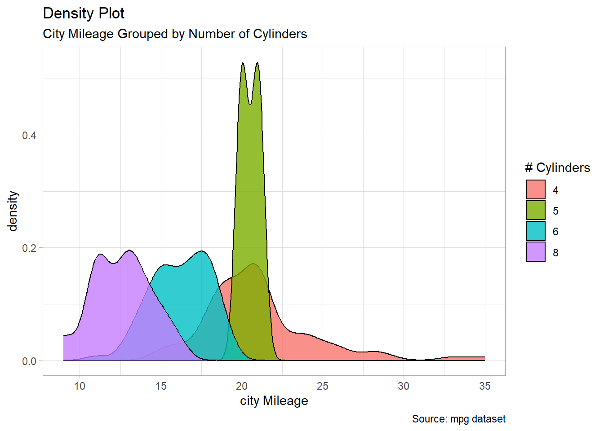
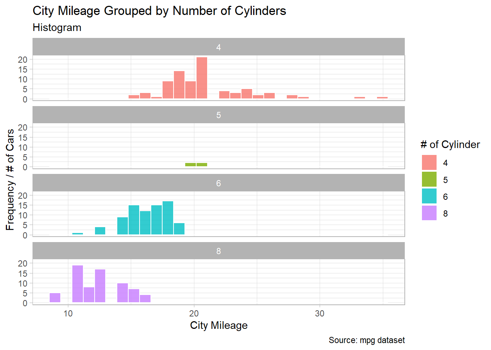
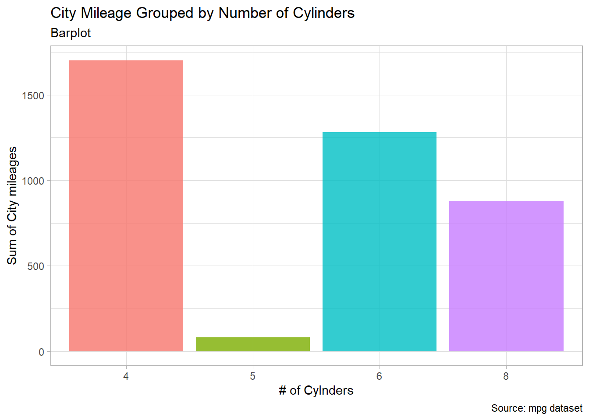
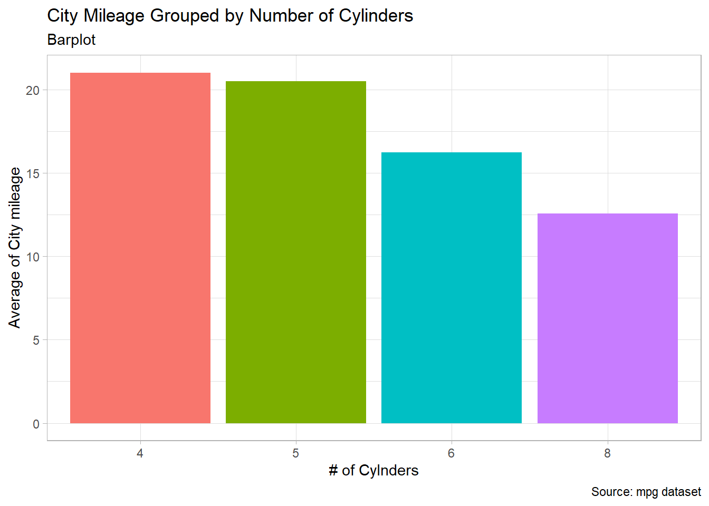
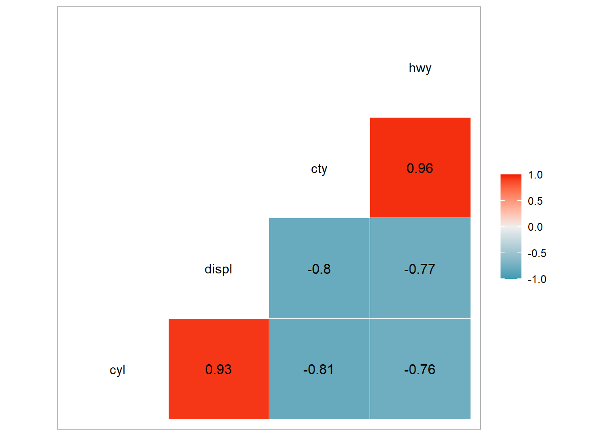
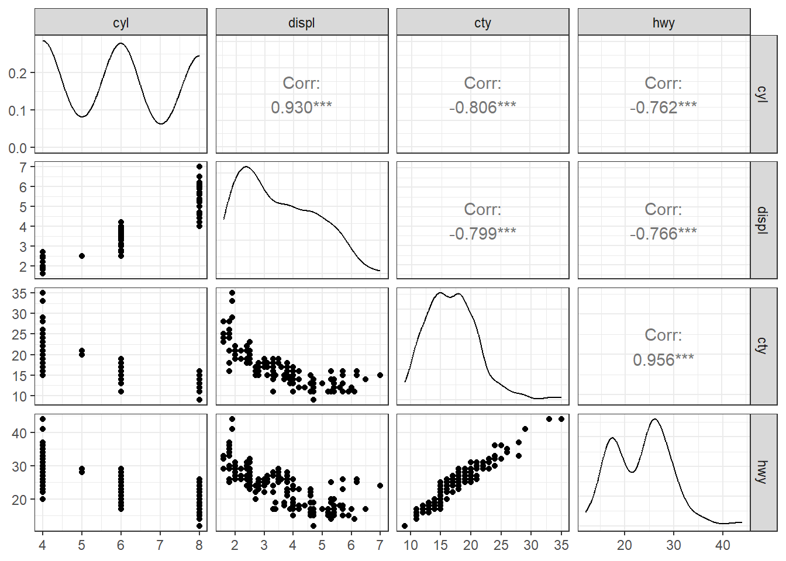

Projects are the containers for all of your scripts
Press new project
Select a new or existing directory depending on your needs
Select your folder that contains your scripts
Press create project
You should see your .proj file and others in the files panel
4.2 Start a codebook and save it
4.2.1 R Scripts
4.2.2 Rmd file
4.2.3 Quarto File
4.2.4 Markdown vs. HTML
Markdown and HTML are both markup languages used for creating formatted content, but they have distinct characteristics. Here’s a summary of their similarities and differences:
Feature
Markdown
HTML
Syntax complexity
Simple and easy to read
More complex with specific tags
Learning curve
Low, quick to learn
Steeper, requires more time to master
Readability
Highly readable, even in raw form
Less readable in raw form
Flexibility
Limited formatting options
Highly flexible with extensive formatting
Output
Primarily static content
Dynamic web pages and applications
Supported elements
Basic formatting (headings, lists, links)
Wide range of elements (forms, multimedia)
Conversion
Easily converts to HTML
Cannot be directly converted to Markdown
Collaborative editing
Well-suited for collaboration
Less ideal for collaborative editing
Customization
Limited styling options
Extensive styling with CSS
Use cases
Documentation, simple content
Complex web development, detailed layouts
Browser support
Requires conversion to HTML
Natively supported by browsers
Extensibility
Limited, varies by flavor
Highly extensible with JavaScript
4.3 Start literate coding
5 Literate Programming
5.1 Basic Operations
In the following code chunk, you will learn some basic operations in R.
```{r}#| label: Basic-Operation1+12*2# *: multiplication2^3# ^: use carrot to raise the base to the power of the following number.#creating an objectmessage <-"Hello WOrld!"# assigning elements to a variable. Do not break between less-than sign and the hyphen.message ="Hello WOrld!"# equal sign also works.#to print,print(message)#to print, print function is necessary. You can just type the object and run it.message# An object can be any type: e.g., strings and numbersnumber <-7max(2,5,90,30) # maximummin(2,5,90,30) # minimum```
# A tibble: 6 × 8
species island bill_length_mm bill_depth_mm flipper_length_mm body_mass_g
<fct> <fct> <dbl> <dbl> <int> <int>
1 Adelie Torgersen 39.1 18.7 181 3750
2 Adelie Torgersen 39.5 17.4 186 3800
3 Adelie Torgersen 40.3 18 195 3250
4 Adelie Torgersen NA NA NA NA
5 Adelie Torgersen 36.7 19.3 193 3450
6 Adelie Torgersen 39.3 20.6 190 3650
# ℹ 2 more variables: sex <fct>, year <int>
[1] 43.92193
5.3 Pipe Operator
Tip
Note that R has always multiple ways to accomplish the same goal. |> is called native pipe operator. It works the same as %>%, which came from mgrittr package that revolutionized the way we code in R, paving the trend for the modern data science in R.
While the data frame, df, in Figure 1 was included inside ggplot function, the df in Figure 2 was the first appear in the code.
The pipe operator is one important difference between base R and Tidyverse in how we code.
6 Quarto
Quarto unifies the functionality of many packages from the R Markdown ecosystem (rmarkdown, bookdown, distill, xaringan, etc.) into a single consistent system as well as extends it with native support for multiple programming languages like Python and Julia in addition to R.
In a way, Quarto reflects everything that was learned from expanding and supporting the R Markdown ecosystem over a decade.
Text area is all the canvas area within qmd file other than Yaml header and code chun areas.
Quarto uses markdown syntax for text.
If using the visual editor, you won’t need to learn much markdown syntax for authoring your document, as you can use the menus and shortcuts to add a header, bold text, insert a table, etc.
If using the source editor, you can achieve these with markdown expressions like ##, bold, etc.
You can use text area for typing pros as you would normally do in MS Word or Google Doc.
Text with formatting, including section headers, hyperlinks, an embedded image, and an inline code chunk.
You can also style it.
Bold
Italicize
Headings: h1, h2, h3
Coding Tips
Note: It is possible to type the code and run in the text area.
However, your code in the text area won’t be read and rendered into a document unless your codes are inside a code chunk. - During the rendering, RStudio will be in auto piolt mode and will treat everything in the text area a text except for in-line coding, which will be demonstrated later.
Thus, do notcode in the text area.
6.3 Qurto Interface
6.3.1 Visual editor
Easier to those who are familiar with MS Word or Google Doc.
ctrl/commnad + /
Adding table by hand is cumbersome; use the visual mode as in Section 9.8.
Adding an figure/image
fig-visual-editor
6.3.2 Source editor
Easier to those who are familiar with R Script file or Rmd file.
Useful for debugging any Quarto syntax errors since it’s often easier to catch these in plain text.
Handy reference sheet available at the RStudio menue: Help > Markdown Quick Reference
The guide below shows how to use Pandoc’s Markdown for authoring Quarto documents in the source editor.
7 Quarto Document types
7.1 HTML
Note: Practice creating documents in each form.
7.2 pdf
In order to create PDFs you will need to install a recent distribution of LaTeX.
Use TinyTeX (which is based on TexLive), which you can install with the following command:
Terminal
quarto install tinytex
7.3 MS Word
---
title: "Testing for Word document"
format: docx
editor: visual
---
7.4 revealjs presentation
---
title: "Testing for Presentation"
format: revealjs
editor: visual
---
7.5 Dashboard
---
title: "Testing for Presentation"
format: dashboard
editor: visual
---
8 Multiple formats
Some documents you create will have only a single output format, however in many cases it will be desirable to support multiple formats. Let’s add the html and docx formats to our document and modify some options specific to each format.
If you would like to render to all formats, you can do so with the quarto package, which provides an R interface to the Quarto CLI. - For example, to render the current document, use quarto::quarto_render(). You can also specify the name of the document you want to render as well as the output format(s).
There are a lot of built-in data set ready for use in R.
mpg is one of the data set
```{r data info}# ?mpg # help# help(mpg) # another way of looking up help```
10.2 Load up data and set-up
```{r prep}library(tidyverse)library(GGally)mpg # print mpg datasetdf <- mpg # assigning the data set to a new namehead(df)theme_set(theme_light()) #set the graphics theme to a light style for this R session.```
# A tibble: 234 × 11
manufacturer model displ year cyl trans drv cty hwy fl class
<chr> <chr> <dbl> <int> <int> <chr> <chr> <int> <int> <chr> <chr>
1 audi a4 1.8 1999 4 auto… f 18 29 p comp…
2 audi a4 1.8 1999 4 manu… f 21 29 p comp…
3 audi a4 2 2008 4 manu… f 20 31 p comp…
4 audi a4 2 2008 4 auto… f 21 30 p comp…
5 audi a4 2.8 1999 6 auto… f 16 26 p comp…
6 audi a4 2.8 1999 6 manu… f 18 26 p comp…
7 audi a4 3.1 2008 6 auto… f 18 27 p comp…
8 audi a4 quattro 1.8 1999 4 manu… 4 18 26 p comp…
9 audi a4 quattro 1.8 1999 4 auto… 4 16 25 p comp…
10 audi a4 quattro 2 2008 4 manu… 4 20 28 p comp…
# ℹ 224 more rows
# A tibble: 6 × 11
manufacturer model displ year cyl trans drv cty hwy fl class
<chr> <chr> <dbl> <int> <int> <chr> <chr> <int> <int> <chr> <chr>
1 audi a4 1.8 1999 4 auto(l5) f 18 29 p compa…
2 audi a4 1.8 1999 4 manual(m5) f 21 29 p compa…
3 audi a4 2 2008 4 manual(m6) f 20 31 p compa…
4 audi a4 2 2008 4 auto(av) f 21 30 p compa…
5 audi a4 2.8 1999 6 auto(l5) f 16 26 p compa…
6 audi a4 2.8 1999 6 manual(m5) f 18 26 p compa…
10.3 Research Hypothesis or Research Questions
H1: City mileage will be negatively associated with the size of cylinder. or
RQ1: Would city mileage differ by cylinder size of vehicles? If so, how?
alpha argument determines the thickness of the color; smaller the number the more transparent it would be.
fill argument have a different effect depending on whether we add it inside or outside aes() function.
factor() transforms the data into a factor, categorical data type.
```{r Density plot}#| label: fig-cty-by-cyl-density#| fig-cap: The impact of cylinder size on the city mileage using density plotg <-ggplot(df, aes(x = cty)) # there is only one variable, "cty"g +geom_density(aes(fill=factor(cyl)), alpha=0.8) +labs(title ="Density Plot",subtitle ="City Mileage Grouped by Number of Cylinders",caption ="Source: mpg dataset",x="city Mileage", fill="# Cylinders")```

Figure 1: The impact of cylinder size on the city mileage using density plot
```{r Histogram}#| label: fig-cty-by-cyl-histogram#| fig-cap: The impact of cylinder size on the city mileage using histogramdf |>ggplot(aes(x = cty, fill=factor(cyl))) +geom_histogram(color ="white", alpha=0.8) +facet_wrap(~factor(cyl), ncol =1) +labs(title ="City Mileage Grouped by Number of Cylinders",subtitle ="Histogram",caption ="Source: mpg dataset",x ="City Mileage",y ="Frequency / # of Cars",fill ="# of Cylinder" )```

Figure 2: The impact of cylinder size on the city mileage using histogram
10.4.3 Summary Insights from both plots
Important
As can be seen in both Figure 1 and Figure 2, cylinder size is negatively related to the city mileage.
10.4.4 Bar Plot
Bar plot is usually used to count one categorical variable, but it can also be used for categorical x and continuous y using “stat = identity”.
Can we plot the impact of cylinder on city mileage using bar plot?
The answer is yes, but a caution is needed to avoid a mistake.
```{r Barplot}#| message: false#| label: fig-cty-by-cyl-bar#| fig-cap: The impact of cylinder size on the city mileage using barplots#| fig-subcap:#| - "cty on Y-axis by summing them by cylinder size"#| - "cty on Y-axis by averaging them per cylinder size during the wrangling stage"#| layout-ncol: 2df |>ggplot(aes(x =factor(cyl), y = cty)) +geom_col(aes(fill=factor(cyl)), alpha=0.8, show.legend =FALSE) +labs(title ="City Mileage Grouped by Number of Cylinders",subtitle ="Barplot",caption ="Source: mpg dataset",x ="# of Cylnders",y ="Sum of City mileages" )df |>group_by(cyl) |># group data by cylsummarize(cty_mean =mean(cty), .groups ="drop") |># calculate mean of cty and call it "cty_mean"ggplot(aes(x =factor(cyl), y = cty_mean)) +geom_col(aes(fill=factor(cyl)), show.legend =FALSE) +labs(title ="City Mileage Grouped by Number of Cylinders",subtitle ="Barplot",caption ="Source: mpg dataset",x ="# of Cylnders",y ="Average of City mileage" )```

(a) cty on Y-axis by summing them by cylinder size

(b) cty on Y-axis by averaging them per cylinder size during the wrangling stage
Figure 3: The impact of cylinder size on the city mileage using barplots
Lessons
When using geom_bar or geom_col with continuous y variable, make sure y is expressed as an an average, not sum.
10.4.5 Correlation
```{r}#| message: false#| label: fig-GGally#| fig-cap: Correlations table using GGally package#| fig-subcap:#| - "correlations using ggcorr"#| - "correlations using ggpairs"#| layout-ncol: 2#| column: pagedf %>%select(cyl, displ, cty, hwy) %>%ggcorr(label =TRUE, label_round =2) df %>%select(cyl, displ, cty, hwy) %>%# select all continuous variables in the dataggpairs()+theme_bw()```

(a) correlations using ggcorr

(b) correlations using ggpairs
Figure 4: Correlations table using GGally package
10.4.6 Scatter plot with regression line
```{r geom point}df %>%select(cyl, cty) %>%ggplot(aes(x = cyl, y = cty))+geom_point() +geom_smooth(method ="lm") +geom_jitter()+labs(title ="City Mileage versus Cylinders",subtitle ="Scatter and jitter plot with regression line",caption ="Source: mpg dataset",x ="# of Cylnders",y ="City mileage", )```
10.4.7 gt and gtsummary tables
```{r}#| label: tbl-mpg-regression#| tbl-cap: Regression of cty on cyllibrary(gtsummary)library(gt)df |>lm(cty ~ cyl, data = _) |>tbl_regression( ) |>add_n() |>modify_header(label ="**Variables**") |>as_gt() |>tab_header(title =md("**Impact of Cylinder Size on City Mileage (cty)**"),subtitle =md("with `mpg` data"))m_reg <- df |>lm(cty ~ cyl, data = _) ```
Table 1: Regression of cty on cyl
Impact of Cylinder Size on City Mileage (cty)
with mpg data
Variables
N
Beta
95% CI1
p-value
cyl
234
-2.1
-2.3, -1.9
<0.001
1 CI = Confidence Interval
10.5 Conclusion
Important
As shown in all the correct charts above, it appears that the number of cylinders is negatively related to city mileages. One may proceeds to use an inferential statistics as in Table 1 to draw a formal conclusion.
According to the correlation analysis above - Figure 4 (a) and Figure 4 (b), the cylinder and the city mileage are highly negatively correlated (r = -0.81). The regressing city miles on cylinder size shows statistically significant negative impact of cylinder size on the city miles such that one unit increase in cylinder size leads to the -2.13 miles decrease in the city mileage.